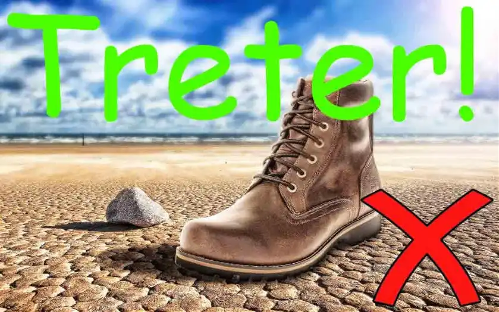

Du brauchst die Bildbearbeitung für Social Media Management
Unternehmen wollen und müssen wahrgenommen werden. Vor allem aber richtig. Die Produkte sollten klar erkennbar sein und nun kommt die Bildgebung ins Spiel. Natürlich ist Bildbearbeitung für Social Media Manager ein wichtiges Thema, denn Bilder sagen so viel mehr als Worte. Hat das Unternehmen ein Corporate Design, sollte sich das auf den Social Media Kanälen wiederfinden. Ein Corporate Design ist eine festgelegte grafische Außendarstellung. Und diese grafische Festlegung überträgst du mit Grafiksoftware in die Bilder.
Den Umgang mit einem Grafikprogramm solltest du lernen, das ist auch nicht schwer und es gibt gute Tutorials. Schau dir mal das kostenlose Tool GIMP an, denn GIMP hat es in sich! Vergiss nicht: Du brauchst die Bildbearbeitung, wie die Bilder selbst für das Social Media Management. Manchmal hat ein Unternehmen auch einen Wust an kreativ-grafischer Auslassung hingelegt. Wichtige Fragen sind für dich:
- Wie tritt das Unternehmen aktuell auf?
- Sind Logo und Farben oder Schrifttypen vorhanden?
- Welchen Sprachstil vertritt das Unternehmen nach außen?
Alles muss gut aufeinander abgestimmt sein und ein rundes Paket bilden. Das Design überträgst du jetzt mit einer Grafiksoftware auf die Bilder die gepostet werden sollen. Das Vorgehen ist aber nicht immer so, denn oft bekommst du die Bilder auch von der Werbeabteilung. Musst du sehen. Aber Grafiksoftware bitte lernen.
Grafiksoftware für Social Media Manager
Erfahrung in Photoshop oder Gimp wirst du früher oder später einfach brauchen! Lerne ein bisschen Grafikbearbeitung, das macht Spaß und lohnt sich. Hast du ein Sparschwein, welches sich nicht mehr bewegen lässt? Kauf dir Photoshop! Es geht echt nicht nur darum, wie man einen Text auf ein Foto legt. Der Text auf dem Bild soll auch noch gut aussehen. Wenn das Unternehmen eine Designlinie (CD) hat, sollte sofort jeder Wissen welche Firma hinter dem Bild steht. Ein Coca-Cola Bild wirst du immer als Coca-Cola Bild erkennen, auch aus 200 Metern! Grafikdesign mit Software, das Verständnis für Bild und Ästhetik sind brauchbar in diesem Beruf.
In der Kommunikation über Social Media sind Bilder und Videos nämlich die wichtigsten Stilmittel und Menschen erfassen Informationen über Bilder viel besser als Texte. Gefühle kannst du mit Bildern auch besser hervorrufen.
Kombination von Text und Bild
Hier siehts du jetzt 2 Beispiele. Eigentlich brauche ich zu diesen beiden Bildern nicht viel schreiben. Da sieht ein Blinder mit Krückstock, dass hier was nicht stimmt. Beim ersten Bild muss klar gesagt werden, so geht das nicht. Das sieht nicht professionell aus, sondern lächerlich:

Wenn schon, dann so:
Ein Text, der das süße Katzenbaby beschreibt, ist nett. Ein Bild mit einem Katzenbaby ist soooo süß! Warum das so ist? Das muss ich nicht erklären, oder? Wenn du jetzt noch den passenden Spruch zu dem Bild findest. Klasse! Ich habe einen eher witzigen Spruch in das Bild gelegt. Zum Zeigen eine ganz nette Sache, wie ich finde.
technische Voraussetzung im Netz
Social Networks stellen unterschiedliche Anforderungen an Bilder. Sehr wichtig sind die Abmessungen eines Bildes. Es gibt meist Profilbilder, Seitenheader und Beitragsbilder. Bilder für Instagram müssen nicht auf Instagram zugeschnitten sein, sollten es aber. Angezeigt werden die Bilder in jedem Falle, wenn du sie bei Insta hochlädst. Sollen die Bilder aber genau so angezeigt werden, wie du es geplant hast müssen sie die richtigen Maße haben. Facebook, YouTube, Instagram und LinkedIn. Da gibt es ja so viele Netzwerke. Du machst am besten für jede Plattform ein eigenes Bild. Es kann sonst passieren, dass zum Beispiel rechts und links was vom Foto abgeschnitten wird. Das mit den Formaten hat sich aber schon schwer gebessert.
Unkontrolliertes Hochladen kann trotzdem daneben gehen, also lass es bitte. Nur dann hast du die volle Kontrolle. Es wäre doch doof, wenn ein Teil der E-Mail-Adresse fehlt und das Bild 10.000 mal geteilt wurde. Och Nöööö! Die Bildgrößen ermittelst du bei dem Social Network selbst und nicht bei Google. Es ist wichtig was du dem User zeigst und vor allem wie du es ihm zeigst. Photoshop oder Gimp sind hier ganz schwer von Vorteil, damit kannst du die richtigen Formate erstellen. Paint empfehle ich dir dafür nicht.
das richtige Bild für deine Zielgruppe
Dann kommen noch die unterschiedlichen Zielgruppen. Jung oder alt, Mann oder Frau und so weiter. Mehr dazu erkläre ich dir noch unter Kundenanalysen. Es ist wichtig, dass du dich in andere hineinversetzen kannst. Erst dann findest du auch die richtige Bildsprache. Um Bilder mit Texten Kombinieren zu können, musst du wissen, wen du ansprechen willst. Ein Foto mit Schrift aus Word reicht da einfach nicht. Gestaltung musst du lernen. Mancher kommt als Künstler auf die Welt. Das passiert aber den wenigsten. Gestaltung geht gut, wenn du Kreativ-Techniken lernst.
Farbpsychologie und Aufteilung sowie Ausschnitt und Anschnitt, da gibt es so viel. Der goldene Schnitt und Typografie. Das ist ein riesiges Thema, ehrlich. Du musst Grafikbearbeitung lernen, wenn du hier kontrolliert arbeiten willst. Grafikbearbeitung gehört auf jeden Fall zum Beruf des Social Media Managers und ich bin mir sicher, dass Grafik in die Ausbildung mit aufgenommen wird. Hier ein Link zu GIMP Tutorials. Schau es dir an, es wird dir helfen. Und keine Angst, so schwer ist das nicht. Du packst das locker, wenn du ein wenig Zeit investierst!
Zum Thema Bildgestaltung zählen auch Videos. Ich habe den separaten Artikel Videoproduktion für Social Media geschrieben, und da erzähle ich dir worauf es bei guten Videos ankommt.